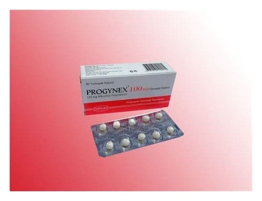

Progynex 100 mg Yumuşak Kapsül, 30 Adet

Ne için kullanılır
KT · Bölüm 1PROGYNEX, bir kapsülde 100 mg doğal progesteron bulunan yumuşak kapsül formunda progestojen grubu bir üründür. PROGYNEX, sığır jelatini içerir.Her bir kutuda 30 yumuşak kapsül bulunur. PROGYNEX; Oral yoldan: • Progesteron yetmezliğine bağlı sorunlar, özellikle; - Adet öncesi sendromda - Adet düzensizliklerinde
- İyi huylu mastopatiler - Menopoz öncesinde - Menopozda (estrojenik tedaviyi tamamlayıcı olarak)
Vajinal yoldan: - Yumurtalık yetmezliğinde ya da tam eksiklik durumunda progesteron desteği olarak, - İn vitro fertilizasyon (Tüp bebek işlemleri) döngüleri sırasında luteal faz desteği olarak, - Kısırlık tedavisinde, - Düşük tehdidi ya da hamileliğin 12. Haftasına kadar luteal yetmezlik nedeniyle tekrarlayan düşüklerin önlenmesinde.